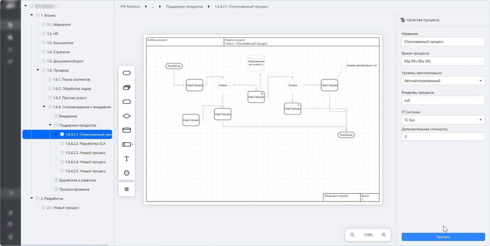
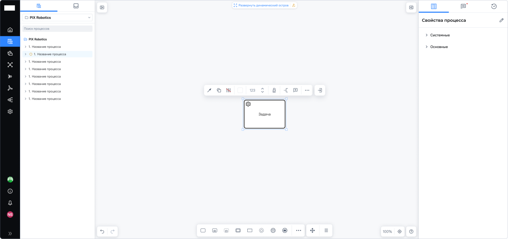
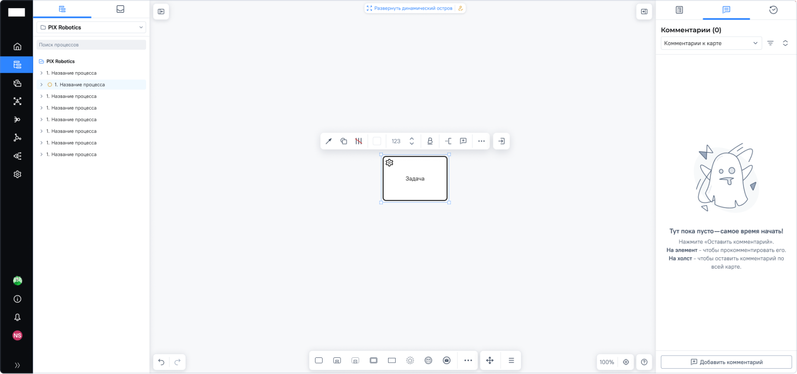
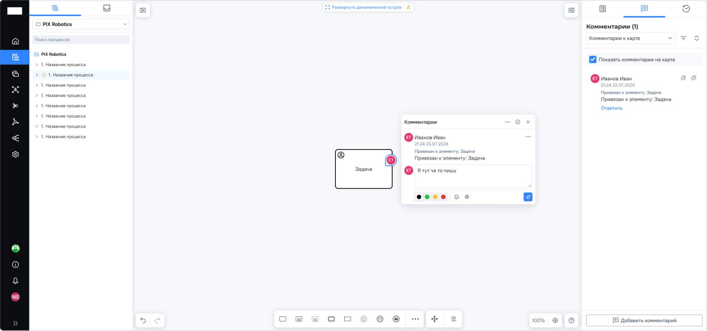
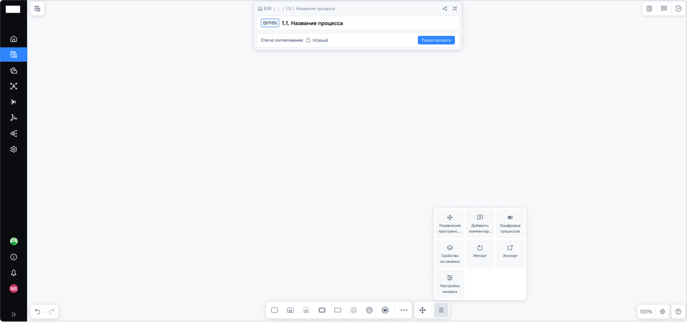

Редизайн раздела карта процессов
Задача
- — Снизить когнитивную нагрузку при работе со сложными схемами
- — Повысить скорость выполнения ключевых сценариев (создание и редактирование процессов)
- — Сделать интерфейс масштабируемым для роста функциональности
- — Унифицировать UX и привести его к единой дизайн-системе
Что я сделал
- — Провёл аудит текущего UX и выявил ключевые проблемы: перегруженность интерфейса, сложность навигации и высокий порог входа
- — Сформулировал гипотезы, на основе них самостоятельно провёл качественное исследование UX
- — Подготовил подробные спецификации и взаимодействовал с разработкой на всех этапах реализации
- — Обновил пользовательский интерфейс страниц в соответствии с обновлённой дизайн-системой
- — Инициировал и внедрил паттерн «панели элементов» для работы с элементами — решение было реализовано в продукте раньше аналогичных паттернов в индустрии
Результат
- — Упростил пользовательский интерфейс: избавился от перегруженной структуры и сфокусировал внимание пользователя на рабочей области
- — Снизил когнитивную нагрузку за счёт перехода к контекстным действиям и упрощённой навигации
- — Ускорил работу с процессами: ключевые действия стали выполняться быстрее за счёт нового UX взаимодействия
- — Повысил удобство редактирования схем благодаря внедрению «панели элементов»
- — Сделал интерфейс масштабируемым — новая структура позволяет проще добавлять функциональность
- — Привёл интерфейс к единой дизайн-системе, что улучшило консистентность продукта
До

После



